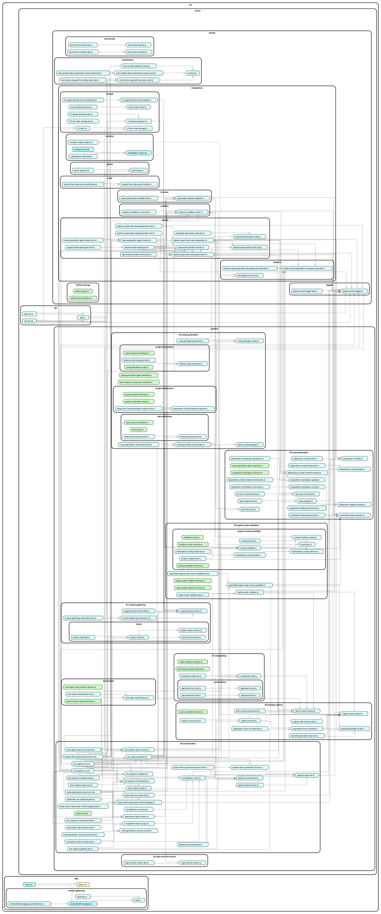

From entrypoint to final video
This is an interactive text document for the repo. The directory tree
is generated from git ls-files. The dependency graph is
generated from dependency-cruiser. The process charts are generated
from Mermaid source files stored beside this page.
Narrative: what runs, in order
1. Browser entrypoint: collect the request
Start in src/app/main.tsx. It renders
<ContextGatheringApp /> into #root.
The main component is
src/app/context-gathering/ContextGatheringApp.tsx.
In that file, RepoConnectionFields handles public repo
URLs and GitHub App/private repo selection. Important functions to
follow are connectGitHub,
continueFromRepo,
readGitHubCallbackRequest,
getGitHubCallbackConnection, and
connectGitHubInstallationRepositories.
ContextDetailsForm collects name, email, product
summary, target users, requested duration, important features, and
Supporting Documents. The functions to follow are
submitDetailsForm, collectIntakeDetails,
startContextGatheringSubmission, and
submitIntake. Browser-side draft helpers live in
src/app/context-gathering/draft.ts.
2. API entrypoint: upload files and queue durable work
src/server/api/server.mts starts the Bun server and
wires real providers: GitHub, R2, Neon, logging, and frontend asset
serving. It calls createApiApp from
src/server/api/app.ts.
Supporting Documents go through POST /api/uploads.
That route uses readMultipartUploadRequest,
assertSupportingDocumentSize, and
storeSupportingDocumentUpload. The storage helper is in
src/server/shared/integrations/storage/r2-upload-presigner.ts.
The main intake route is
POST /api/context-gathering/submit. It calls
submitContextGathering in
context-gathering-submission.ts, which validates the
repo URL, private repo installation, contact fields, requested
duration, and Supporting Document metadata. It then calls
ContextGatheringStore.createQueuedProject.
The Neon implementation is
NeonContextGatheringStore.createQueuedProject. It
upserts users, inserts a queued projects
row, inserts a linked demoRequests row, and returns
demoRequestId, projectId, and
status: "queued".
3. Worker entrypoint: turn queued rows into Pipeline Jobs
project-demo-generation-worker.mts claims queued
projects. It calls
processNextProjectDemoGenerationJob in
project-demo-generation-queue.ts.
The queue store implementation is
NeonProjectDemoGenerationQueueStore.claimNextQueuedProject.
It atomically changes the oldest queued project to
processing, reads the linked Demo Request, maps context
into demoBrief, loads normalized Supporting Documents,
and returns the input for runFullPipelineJob.
For local runs, start at full-pipeline-cli.mts. For
production queue runs, start at
project-demo-generation-worker.mts.

4. Pre-capture gates: only promote a script after validation
The core pre-capture function is runPipelineJob in
pipeline-orchestrator.ts. It returns the union defined
in pipeline-job.ts: security-rejected,
preparation-failed,
capture-path-validation-failed, or
succeeded.
First, screenRepoSecurity runs the deterministic static
gate. Next, prepareRepo asks a
RepoPreparationAgent to prepare a workspace and then
validates the result with readPreparationManifest. The
crucial artifact is PreparationManifest: it records the
demo command, local URL, setup summary, assumptions, risks, changed
files, and script-generation context.
Script Generation then produces a DemoScriptCandidate
through generateScriptPackage or
generateDemoScriptPackage. The candidate is not trusted
yet. runCapturePathValidation calls
validateCapturePath; only after that succeeds does the
orchestrator assign
const acceptedDemoScript: AcceptedDemoScript = demoScriptCandidate.
5. Runtime boundary: separate agent power from submitted app runtime
The boundary starts with PreparationWorkspace in
preparation-workspace.interface.ts. Parent workspace
commands use execute. Submitted-code sandbox commands
use executeSubmittedCode. Network is controlled through
setOutboundNetworkAccess and
setSubmittedCodeNetworkAccess.
The Daytona implementation is
DaytonaSdkPreparationWorkspaceProvider. It creates a
parent agent sandbox and, when configured, a linked submitted-code
sandbox with networkBlockAll: true. The helper
syncSubmittedCodeWorkspace copies prepared files from
the parent workspace into the submitted-code sandbox.
Dependency installs are the controlled exception. The function
runDependencyInstallWithNetworkWindow calls
evaluateDependencyNetworkRequest, opens submitted-code
network access, runs the install with executeSubmittedCode,
and reseals network access in finally.

6. Capture Path Validation: the non-agent trust gate
validateCapturePath first parses the Demo Script with
parseDemoScript and enforces the Capture SDK contract
with assertDemoScriptCaptureSdkContract. It then runs
project preflight through validateProject.
validateProject calls a SandboxRunner and
then a BrowserValidator. The Daytona implementation is
DaytonaSandboxRunner.runValidation; the browser
implementation is PlaywrightBrowserValidator.validate.
Runtime network evidence is filtered and redacted by
findRuntimeBoundaryViolations,
sanitizeNetworkAttempts, and
sanitizeNetworkAttemptUrl.
The generated script dry-run is handled by
DefaultCapturePathSceneValidator.validateScene. In a
prepared workspace it calls
validateSceneInPreparationWorkspace, uploads generated
harness files, executes submitted code, and parses
[makeademo:scene] plus
[makeademo:network-blocked] markers.
7. Footage Capture, Compositing, and final output
After pre-capture success, runFullPipelineJob persists
the generated script through persistGeneratedScript,
then enters captureCompositeAndReview. Before capture,
createDaytonaFreshCaptureStatePreparer can restart the
prepared demo from a fresh baseline.
Footage Capture starts at captureScenesFromScript. It
parses the accepted Demo Script, checks
assertDemoScriptCaptureSdkContract, and records through
a SceneRecorder. The prepared-workspace implementation
is PreparedWorkspacePlaywrightSceneRecorder. It records
one continuous take, reads scene markers, and writes a
CaptureManifest plus per-scene clips.
Compositing starts at compositeVideoFromScript. It
checks that script and capture manifest IDs match, stages clips,
fonts, and music, writes render-plan.json, renders
final-video.mp4 through
RemotionVideoRenderer.renderVideo, and writes
composite-manifest.json.
Final storage is handled by storeAndLinkFinalVideo,
R2FinalVideoStorage.storeFinalVideo, and
NeonDemoRequestFinalVideoStore.linkFinalVideo. Email, if
enabled by finalVideoEmailsEnabled, goes through
ResendFinalVideoEmailNotifier.sendFinalVideoReadyEmail.
Crucial mechanisms to understand
Repo Preparation handoff
Repo Preparation turns an unknown submitted repo into a known demo runtime. The agent works in an ephemeral workspace, but the durable handoff is the Preparation Manifest: command, URL, mocks, risks, assumptions, and workspace changes.
Runtime Network Lockdown
Dependency installation is the only intended network-open runtime window. After that, validators and capture scripts block external network attempts and report redacted evidence. This keeps final footage from depending on outside services.
Capture Path Validation
Capture Path Validation is the non-agent gate. It checks the prepared app, the generated Demo Script contract, scene markers, Playwright assertions, runtime network attempts, and repair attempts before Footage Capture is allowed to trust the script.
Event-marked Footage Capture
Generated scripts call the MakeADemo Capture SDK. The SDK emits scene/action markers during one continuous take, letting the recorder split reliable scene clips without guessing durations.
Compositing and Draft Composite review
Compositing turns scene clips and presentation metadata into a Render Plan and final video. Draft Composite review can reject a rendered draft and route repair back to the script or workspace before accepting the final output.
Generated dependency graph
This SVG is generated from the current src/ dependency
graph using dependency-cruiser, not drawn by hand. Open it in a new tab
if the embedded view is too dense.
{kind=link}

Generated file-by-file directory tree
This tree is rendered from generated/file-inventory.js,
which was generated from git ls-files. Every tracked file
in the repo appears here with a short purpose note.